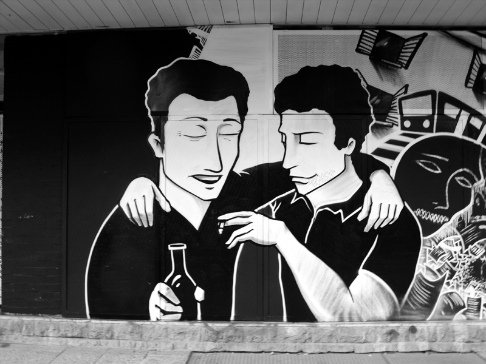

|  |
Come together. So wie sich die Rapmusik freimütig aus Versatzstücken anderer Stilrichtungen bedient, hat auch die Graffitikultur den eigenen ästhetischen Horizont der verschnörketen Schriftzüge längst überwunden und zitiert gern die Bildsprache anderer Kunstformen. Die des Comics ist sicher eine naheliegende, dabei jedoch bereits meilenweit von der Wild-Style-Orthodoxie entfernt. |